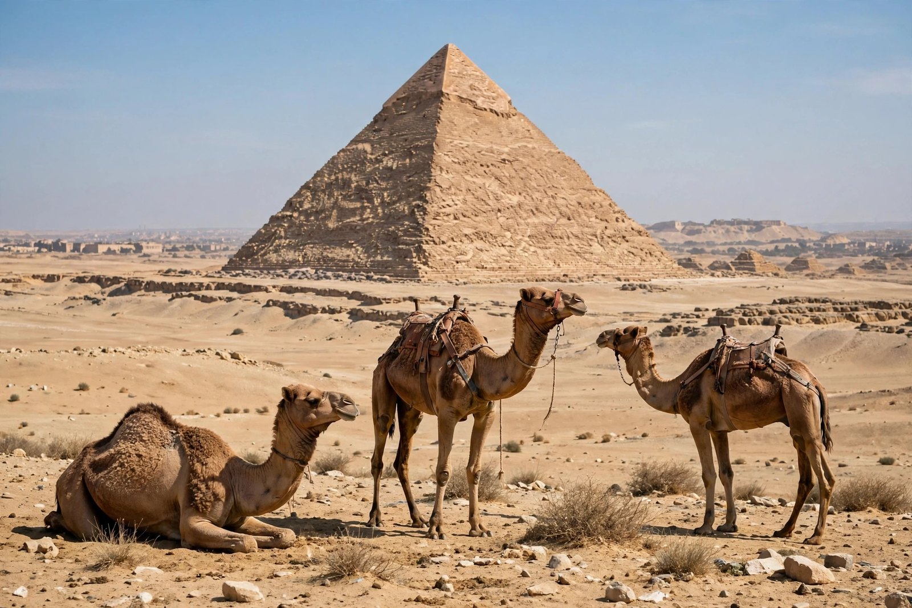

Great Pyramid of Giza
From Wikipedia, the free encyclopedia

The Great Pyramid of Giza (also the Pyramid of Khufu or Cheops) is the oldest and largest of the three pyramids of the Giza pyramid complex in Egypt, and the only one of the Seven Wonders of the Ancient World to remain largely intact. Built as a tomb for the pharaoh Khufu over roughly twenty to thirty years around 2580–2560 BC, it stood 146.6 metres (481 ft) tall — the tallest human-made structure in the world for more than 3,800 years.
Construction
The pyramid contains an estimated 2.3 million stone blocks averaging 2.5 tonnes, with some granite beams of 50–80 tonnes quarried at Aswan 800 km away. A paid, rotating labour force of Egyptian workers (not slaves, as archaeology of the builders' town and tombs indicates) built it in seasonal campaigns; ramps, levers and sledges remain debated as the construction method. Its sides are aligned to the cardinal points with astonishing accuracy and its base levelled to within centimetres.
Interior and contents
Three main chambers are known: an unfinished subterranean chamber, the 'Queen's Chamber' and the King's Chamber with Khufu's empty granite sarcophagus, reached by the corbelled Grand Gallery. Narrow 'air shafts' point to significant stars. Robbed in antiquity, the pyramid still yields discoveries — a previously unknown corridor above the entrance was confirmed in 2023 by muon scanning (ScanPyramids).
Later history and study
Cased originally in polished white limestone (mostly stripped for medieval Cairo after an earthquake), the pyramid has inspired pyramidology and pseudo-archaeology for centuries, which Egyptology firmly rejects. It anchors the Giza UNESCO World Heritage Site with the pyramids of Khafre and Menkaure and the Sphinx, and the nearby Grand Egyptian Museum opened in the 2020s.